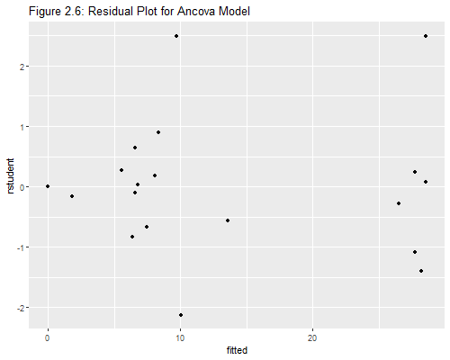
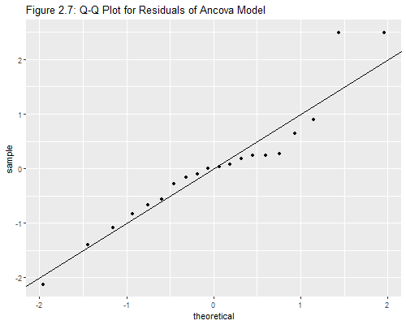

{% include r.css %}


<div id="c2s9" class="section level2 first">
<h2 class="first">2.9 Regression Diagnostics</h2>
<p>In this section we will be working with the additive analysis of
covariance model of the previous section. As usual, we start by reading
the data and recreating the variables we need. We then fit the
model.</p>
<pre class="r"><code>&gt; library(dplyr)
&gt; fpe &lt;- read.table(&quot;https://grodri.github.io/datasets/effort.dat&quot;) |&gt;
+   mutate(effort_g = cut(effort, breaks=c(min(effort), 5, 15, max(effort)),
+   right=FALSE, include.lowest=TRUE, labels=c(&quot;Weak&quot;,&quot;Moderate&quot;,&quot;Strong&quot;)))
&gt; m2cg &lt;- lm(change ~ setting + effort_g, data=fpe) </code></pre>
<p>All of the diagnostic measures discussed in the lecture notes can be
calculated in Stata and R, some in more than one way.</p>
<div id="residuals" class="section level3">
<h3>Residuals</h3>
<p>Let us start with the residuals. The extractor function
<code>residuals()</code> returns raw residuals, and has an optional
argument to return other types, but I find it easier to use
<code>rstandard()</code> for standardized and <code>rstudent()</code>
for studentized residuals. Let us obtain all three:</p>
<pre class="r"><code>&gt; ddf &lt;- data.frame( residuals=residuals(m2cg), rstandard=rstandard(m2cg), 
+   rstudent=rstudent(m2cg))</code></pre>
</div>
<div id="leverage-and-influence" class="section level3">
<h3>Leverage and Influence</h3>
<p>To get the diagonal elements of the hat matrix and Cook’s distance we
use the extractor functions <code>hatvalues()</code> and
<code>cooks.distance()</code>:</p>
<pre class="r"><code>&gt; library(dplyr)
&gt; ddf &lt;- mutate(ddf, hat=hatvalues(m2cg), cooks=cooks.distance(m2cg))</code></pre>
<p>We are now ready to print Table 2.29 in the notes.</p>
<pre class="r"><code>&gt; ddf</code></pre>
<pre><code>                  residuals    rstandard     rstudent       hat        cooks
Bolivia         -0.83227667 -0.168973754 -0.163754309 0.2616128 2.529026e-03
Brazil           3.42822888  0.657314248  0.645213030 0.1720945 2.245290e-02
Chile            0.44160541  0.083498910  0.080865093 0.1486769 3.044043e-04
Colombia        -1.52718268 -0.291358059 -0.282857589 0.1637904 4.156879e-03
CostaRica        1.28794371  0.242731989  0.235458166 0.1431063 2.459947e-03
Cuba            11.44160541  2.163382852  2.490348474 0.1486769 2.043412e-01
DominicanRep    11.29992007  2.161597338  2.487444785 0.1682585 2.363079e-01
Ecuador        -10.03861524 -1.925295856 -2.126718448 0.1725535 1.932498e-01
ElSalvador       4.65406134  0.895661609  0.889814268 0.1782050 4.348948e-02
Guatemala       -3.49960036 -0.685374906 -0.673572655 0.2064620 3.055405e-02
Haiti            0.02966757  0.006930347  0.006710289 0.4422478 9.520821e-06
Honduras         0.17747027  0.035544869  0.034417531 0.2412746 1.004433e-04
Jamaica         -7.21985927 -1.361728588 -1.402245438 0.1444142 7.824693e-02
Mexico           0.90481996  0.183036697  0.177410357 0.2562359 2.885500e-03
Nicaragua        1.44383484  0.272655282  0.264612794 0.1465179 3.190539e-03
Panama          -5.71205629 -1.076521261 -1.082268869 0.1431063 4.838569e-02
Paraguay        -0.57177112 -0.109628999 -0.106187711 0.1720945 6.245643e-04
Peru            -4.40250346 -0.841096436 -0.833012218 0.1661363 3.523718e-02
TrinidadTobago   1.28794371  0.242731989  0.235458166 0.1431063 2.459947e-03
Venezuela       -2.59323608 -0.575229384 -0.562813507 0.3814295 5.100904e-02</code></pre>
<p>Here is an easy way to find the cases highlighted in Table 2.29,
those with standardized or jackknifed residuals greater than 2 in
magnitude:</p>
<pre class="r"><code>&gt; filter(ddf, abs(rstandard) &gt; 2 | abs(rstudent) &gt; 2)</code></pre>
<pre><code>             residuals rstandard  rstudent       hat     cooks
Cuba          11.44161  2.163383  2.490348 0.1486769 0.2043412
DominicanRep  11.29992  2.161597  2.487445 0.1682585 0.2363079
Ecuador      -10.03862 -1.925296 -2.126718 0.1725535 0.1932498</code></pre>
<p>We will calculate the maximum acceptable leverage, which is
<em>2p/n</em> in general, and then list the cases exceeding that value
(if any).</p>
<pre class="r"><code>&gt; hatmax = 2*4/20
&gt; filter(ddf, hat &gt; hatmax)</code></pre>
<pre><code>       residuals   rstandard    rstudent       hat        cooks
Haiti 0.02966757 0.006930347 0.006710289 0.4422478 9.520821e-06</code></pre>
<p>We find that Haiti has a lot of leverage, but very little actual
influence. Let us list the six most influential countries. I will do
this using <code>arrange()</code> with <code>desc()</code> to sort in
descending order, and then using subscripts to pick the first 6
rows.</p>
<pre class="r"><code>&gt; arrange(ddf, desc(cooks))[1:6,]</code></pre>
<pre><code>              residuals  rstandard   rstudent       hat      cooks
DominicanRep  11.299920  2.1615973  2.4874448 0.1682585 0.23630787
Cuba          11.441605  2.1633829  2.4903485 0.1486769 0.20434122
Ecuador      -10.038615 -1.9252959 -2.1267184 0.1725535 0.19324976
Jamaica       -7.219859 -1.3617286 -1.4022454 0.1444142 0.07824693
Venezuela     -2.593236 -0.5752294 -0.5628135 0.3814295 0.05100904
Panama        -5.712056 -1.0765213 -1.0822689 0.1431063 0.04838569</code></pre>
<p>Turns out that the D.R., Cuba, and Ecuador are fairly influential
observations. Try refitting the model without the D.R. to verify what I
say on page 57 of the lecture notes.</p>
</div>
<div id="residual-plots" class="section level3">
<h3>Residual Plots</h3>
<p>On to plots! Here is the standard residual plot in Figure 2.6,
produced using the following code:</p>
<pre class="r"><code>&gt; library(ggplot2)
&gt; ddf &lt;- mutate(ddf, fitted = fitted(m2cg))
&gt; png(&quot;fig26r.png&quot;, width=500, height=400)
&gt; ggplot(ddf, aes(fitted, rstudent)) + geom_point() +
+   ggtitle(&quot;Figure 2.6: Residual Plot for Ancova Model&quot;)   
&gt; dev.off()</code></pre>
<pre><code>png 
  2 </code></pre>
<p></p>
<p><em>Exercise</em>: Can you label the points corresponding to Cuba,
the D.R. and Ecuador?</p>
</div>
<div id="q-q-plots" class="section level3">
<h3>Q-Q Plots</h3>
<p>Now for that lovely Q-Q-plot in Figure 2.7 of the notes:</p>
<pre class="r"><code>&gt; library(ggplot2)
&gt; png(&quot;fig27r.png&quot;, width=500, height=400)
&gt; ggplot(ddf, aes(sample = rstudent)) +  
+   stat_qq() + geom_abline(intercept=0, slope=1) +
+   ggtitle(&quot;Figure 2.7: Q-Q Plot for Residuals of Ancova Model&quot;)
&gt; dev.off()</code></pre>
<pre><code>png 
  2 </code></pre>
<p></p>
<p>Wasn’t that easy? The <code>qnorm()</code> function in base R will do
this plot, but I used the equivalent <code>stat_qq()</code> in the
<code>ggplot2</code> package. I superimposed a 45 degree line rather
than using <code>stata_qq_line()</code>. It is not clear to me how they
approximate the rankits, but the calculation seems very close to
<em>(i-3/8)/(n+1/4)</em>, except for a couple of points on either tail.
Of course you can use any approximation you want, albeit at the expense
of additional work.</p>
</div>
<div id="filliben" class="section level3">
<h3>Filliben</h3>
<p>I will illustrate the general idea by calculating Filliben’s
approximation to the expected order statistics or rankits. After sorting
the studentized residuals I use <code>row_number()</code> for the
observation number and <code>nrow()</code> for the number of cases.</p>
<pre class="r"><code>&gt; N &lt;- nrow(ddf)
&gt; ddf &lt;- arrange(ddf, rstudent) |&gt;
+    mutate(p = (row_number()-0.3175)/(N + 0.365))
&gt; ddf$p[1] &lt;- 1-0.5^(1/N); ddf$p[N] &lt;- 0.5^(1/N)
&gt; ddf &lt;- mutate(ddf, filliben = qnorm(p))
&gt; summarize(ddf, r_rstudent=cor(rstudent,filliben), 
+   r_rstandard=cor(rstandard,filliben))</code></pre>
<pre><code>  r_rstudent r_rstandard
1  0.9517735   0.9655174</code></pre>
<p>The correlation is 0.9518 using jack-knifed residuals, and 0.9655
using standardized residuals. The latter is the value quoted in the
notes. Both are above (if barely) the minimum correlation of 0.95 needed
to accept normality. I will skip the graph because it looks almost
identical to the one produced above.</p>
<p><small>Updated fall 2022</small></p>
</div>
</div>
